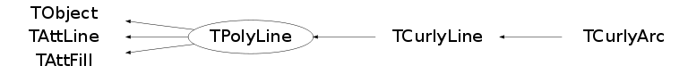

class TPolyLine: public TObject, public TAttLine, public TAttFill
a PolyLine is defined by an array on N points in a 2-D space.
One can draw the contour of the polyline or/and its fill area.
Example:
{
Double_t x[5] = {.2,.7,.6,.25,.2};
Double_t y[5] = {.5,.1,.9,.7,.5};
TPolyLine *pline = new TPolyLine(5,x,y);
pline->SetFillColor(38);
pline->SetLineColor(2);
pline->SetLineWidth(4);
pline->Draw("f");
pline->Draw();
}
Function Members (Methods)
public:
| TPolyLine() | |
| TPolyLine(const TPolyLine& polyline) | |
| TPolyLine(Int_t n, Option_t* option = "") | |
| TPolyLine(Int_t n, Float_t* x, Float_t* y, Option_t* option = "") | |
| TPolyLine(Int_t n, Double_t* x, Double_t* y, Option_t* option = "") | |
| virtual | ~TPolyLine() |
| void | TObject::AbstractMethod(const char* method) const |
| virtual void | TObject::AppendPad(Option_t* option = "") |
| virtual void | TObject::Browse(TBrowser* b) |
| static TClass* | Class() |
| virtual const char* | TObject::ClassName() const |
| virtual void | TObject::Clear(Option_t* = "") |
| virtual TObject* | TObject::Clone(const char* newname = "") const |
| virtual Int_t | TObject::Compare(const TObject* obj) const |
| virtual void | Copy(TObject& polyline) const |
| virtual void | TObject::Delete(Option_t* option = "")MENU |
| Int_t | TAttLine::DistancetoLine(Int_t px, Int_t py, Double_t xp1, Double_t yp1, Double_t xp2, Double_t yp2) |
| virtual Int_t | DistancetoPrimitive(Int_t px, Int_t py) |
| virtual void | Draw(Option_t* option = "") |
| virtual void | TObject::DrawClass() constMENU |
| virtual TObject* | TObject::DrawClone(Option_t* option = "") constMENU |
| virtual void | DrawPolyLine(Int_t n, Double_t* x, Double_t* y, Option_t* option = "") |
| virtual void | TObject::Dump() constMENU |
| virtual void | TObject::Error(const char* method, const char* msgfmt) const |
| virtual void | TObject::Execute(const char* method, const char* params, Int_t* error = 0) |
| virtual void | TObject::Execute(TMethod* method, TObjArray* params, Int_t* error = 0) |
| virtual void | ExecuteEvent(Int_t event, Int_t px, Int_t py) |
| virtual void | TObject::Fatal(const char* method, const char* msgfmt) const |
| virtual TObject* | TObject::FindObject(const char* name) const |
| virtual TObject* | TObject::FindObject(const TObject* obj) const |
| virtual Option_t* | TObject::GetDrawOption() const |
| static Long_t | TObject::GetDtorOnly() |
| virtual Color_t | TAttFill::GetFillColor() const |
| virtual Style_t | TAttFill::GetFillStyle() const |
| virtual const char* | TObject::GetIconName() const |
| virtual Int_t | GetLastPoint() const |
| virtual Color_t | TAttLine::GetLineColor() const |
| virtual Style_t | TAttLine::GetLineStyle() const |
| virtual Width_t | TAttLine::GetLineWidth() const |
| Int_t | GetN() const |
| virtual const char* | TObject::GetName() const |
| virtual char* | TObject::GetObjectInfo(Int_t px, Int_t py) const |
| static Bool_t | TObject::GetObjectStat() |
| virtual Option_t* | GetOption() const |
| virtual const char* | TObject::GetTitle() const |
| virtual UInt_t | TObject::GetUniqueID() const |
| Double_t* | GetX() const |
| Double_t* | GetY() const |
| virtual Bool_t | TObject::HandleTimer(TTimer* timer) |
| virtual ULong_t | TObject::Hash() const |
| virtual void | TObject::Info(const char* method, const char* msgfmt) const |
| virtual Bool_t | TObject::InheritsFrom(const char* classname) const |
| virtual Bool_t | TObject::InheritsFrom(const TClass* cl) const |
| virtual void | TObject::Inspect() constMENU |
| void | TObject::InvertBit(UInt_t f) |
| virtual TClass* | IsA() const |
| virtual Bool_t | TObject::IsEqual(const TObject* obj) const |
| virtual Bool_t | TObject::IsFolder() const |
| Bool_t | TObject::IsOnHeap() const |
| virtual Bool_t | TObject::IsSortable() const |
| virtual Bool_t | TAttFill::IsTransparent() const |
| Bool_t | TObject::IsZombie() const |
| virtual void | ls(Option_t* option = "") const |
| void | TObject::MayNotUse(const char* method) const |
| virtual Int_t | Merge(TCollection* list) |
| virtual void | TAttLine::Modify() |
| virtual Bool_t | TObject::Notify() |
| void | TObject::Obsolete(const char* method, const char* asOfVers, const char* removedFromVers) const |
| static void | TObject::operator delete(void* ptr) |
| static void | TObject::operator delete(void* ptr, void* vp) |
| static void | TObject::operator delete[](void* ptr) |
| static void | TObject::operator delete[](void* ptr, void* vp) |
| void* | TObject::operator new(size_t sz) |
| void* | TObject::operator new(size_t sz, void* vp) |
| void* | TObject::operator new[](size_t sz) |
| void* | TObject::operator new[](size_t sz, void* vp) |
| virtual void | Paint(Option_t* option = "") |
| virtual void | PaintPolyLine(Int_t n, Double_t* x, Double_t* y, Option_t* option = "") |
| virtual void | PaintPolyLineNDC(Int_t n, Double_t* x, Double_t* y, Option_t* option = "") |
| virtual void | TObject::Pop() |
| virtual void | Print(Option_t* option = "") const |
| virtual Int_t | TObject::Read(const char* name) |
| virtual void | TObject::RecursiveRemove(TObject* obj) |
| virtual void | TAttFill::ResetAttFill(Option_t* option = "") |
| virtual void | TAttLine::ResetAttLine(Option_t* option = "") |
| void | TObject::ResetBit(UInt_t f) |
| virtual void | TObject::SaveAs(const char* filename = "", Option_t* option = "") constMENU |
| virtual void | TAttFill::SaveFillAttributes(ostream& out, const char* name, Int_t coldef = 1, Int_t stydef = 1001) |
| virtual void | TAttLine::SaveLineAttributes(ostream& out, const char* name, Int_t coldef = 1, Int_t stydef = 1, Int_t widdef = 1) |
| virtual void | SavePrimitive(ostream& out, Option_t* option = "") |
| void | TObject::SetBit(UInt_t f) |
| void | TObject::SetBit(UInt_t f, Bool_t set) |
| virtual void | TObject::SetDrawOption(Option_t* option = "")MENU |
| static void | TObject::SetDtorOnly(void* obj) |
| virtual void | TAttFill::SetFillAttributes()MENU |
| virtual void | TAttFill::SetFillColor(Color_t fcolor) |
| virtual void | TAttFill::SetFillStyle(Style_t fstyle) |
| virtual void | TAttLine::SetLineAttributes()MENU |
| virtual void | TAttLine::SetLineColor(Color_t lcolor) |
| virtual void | TAttLine::SetLineStyle(Style_t lstyle) |
| virtual void | TAttLine::SetLineWidth(Width_t lwidth) |
| virtual void | SetNDC(Bool_t isNDC = kTRUE) |
| virtual Int_t | SetNextPoint(Double_t x, Double_t y)MENU |
| static void | TObject::SetObjectStat(Bool_t stat) |
| virtual void | SetOption(Option_t* option = "") |
| virtual void | SetPoint(Int_t point, Double_t x, Double_t y)MENU |
| virtual void | SetPolyLine(Int_t n) |
| virtual void | SetPolyLine(Int_t n, Float_t* x, Float_t* y, Option_t* option = "") |
| virtual void | SetPolyLine(Int_t n, Double_t* x, Double_t* y3, Option_t* option = "") |
| virtual void | TObject::SetUniqueID(UInt_t uid) |
| virtual void | ShowMembers(TMemberInspector& insp) |
| virtual Int_t | Size() const |
| virtual void | Streamer(TBuffer& b) |
| void | StreamerNVirtual(TBuffer& b) |
| virtual void | TObject::SysError(const char* method, const char* msgfmt) const |
| Bool_t | TObject::TestBit(UInt_t f) const |
| Int_t | TObject::TestBits(UInt_t f) const |
| virtual void | TObject::UseCurrentStyle() |
| virtual void | TObject::Warning(const char* method, const char* msgfmt) const |
| virtual Int_t | TObject::Write(const char* name = 0, Int_t option = 0, Int_t bufsize = 0) |
| virtual Int_t | TObject::Write(const char* name = 0, Int_t option = 0, Int_t bufsize = 0) const |
protected:
| virtual void | TObject::DoError(int level, const char* location, const char* fmt, va_list va) const |
| void | TObject::MakeZombie() |
| TPolyLine& | operator=(const TPolyLine&) |
Data Members
public:
| enum { | kPolyLineNDC | |
| }; | ||
| enum TObject::EStatusBits { | kCanDelete | |
| kMustCleanup | ||
| kObjInCanvas | ||
| kIsReferenced | ||
| kHasUUID | ||
| kCannotPick | ||
| kNoContextMenu | ||
| kInvalidObject | ||
| }; | ||
| enum TObject::[unnamed] { | kIsOnHeap | |
| kNotDeleted | ||
| kZombie | ||
| kBitMask | ||
| kSingleKey | ||
| kOverwrite | ||
| kWriteDelete | ||
| }; |
protected:
| Color_t | TAttFill::fFillColor | fill area color |
| Style_t | TAttFill::fFillStyle | fill area style |
| Int_t | fLastPoint | The index of the last filled point |
| Color_t | TAttLine::fLineColor | line color |
| Style_t | TAttLine::fLineStyle | line style |
| Width_t | TAttLine::fLineWidth | line width |
| Int_t | fN | Number of points |
| TString | fOption | options |
| Double_t* | fX | [fN] Array of X coordinates |
| Double_t* | fY | [fN] Array of Y coordinates |
Class Charts
{kind=link}
{kind=link}
{kind=link}
{kind=link}

Function documentation
TPolyLine(Int_t n, Option_t* option = "")
PolyLine normal constructor without initialisation. Allocates n points. The option string is ignored.
TPolyLine(Int_t n, Float_t* x, Float_t* y, Option_t* option = "")
PolyLine normal constructor (single precision). Makes n points with (x, y) coordinates from x and y. The option string is ignored.
TPolyLine(Int_t n, Double_t* x, Double_t* y, Option_t* option = "")
PolyLine normal constructor (double precision). Makes n points with (x, y) coordinates from x and y. The option string is ignored.
Int_t DistancetoPrimitive(Int_t px, Int_t py)
Returns closest distance in pixels from point (px, py) to a polyline.
First looks for distances to the points of the polyline. Stops search
and returns if a vertex of the polyline is found to be closer than 10
pixels. Thus the return value may depend on the ordering of points
in the polyline.
Then looks for distances to the lines of the polyline. There is no
arbitrary cutoff; any distance may be found.
Finally checks whether (px, py) is inside a closed and filled polyline.
(Must be EXACTLY closed. "Filled" means fill color and fill style are
both non-zero.) If so, returns zero.
Returns 9999 if the polyline has no points.
void DrawPolyLine(Int_t n, Double_t* x, Double_t* y, Option_t* option = "")
Draw this polyline with new coordinates.
void ExecuteEvent(Int_t event, Int_t px, Int_t py)
Execute action corresponding to one event. This member function is called when a polyline is clicked with the locator If Left button clicked on one of the line end points, this point follows the cursor until button is released. if Middle button clicked, the line is moved parallel to itself until the button is released.
void ls(Option_t* option = "") const
List this polyline with its attributes. The option string is ignored.
void PaintPolyLine(Int_t n, Double_t* x, Double_t* y, Option_t* option = "")
Draw this polyline with new coordinates. If option = 'f' or 'F' the fill area is drawn. The default is to draw the lines only.
void PaintPolyLineNDC(Int_t n, Double_t* x, Double_t* y, Option_t* option = "")
Draw this polyline with new coordinates in NDC.
void Print(Option_t* option = "") const
Dump this polyline with its attributes. The option string is ignored.
void SavePrimitive(ostream& out, Option_t* option = "")
Save primitive as a C++ statement(s) on output stream out
Int_t SetNextPoint(Double_t x, Double_t y)
Set point following LastPoint to x, y. Returns index of the point (new last point).
void SetPoint(Int_t point, Double_t x, Double_t y)
Set point number n to (x, y) If n is greater than the current size, the arrays are automatically extended.
void SetPolyLine(Int_t n)
Resize this polyline to size n. If n <= 0 the current arrays of points are deleted. If n is greater than the current size, the new points are set to (0, 0)
void SetPolyLine(Int_t n, Float_t* x, Float_t* y, Option_t* option = "")
Set new values for this polyline (single precision). If n <= 0 the current arrays of points are deleted.
void SetPolyLine(Int_t n, Double_t* x, Double_t* y3, Option_t* option = "")
Set new values for this polyline (double precision). If n <= 0 the current arrays of points are deleted.